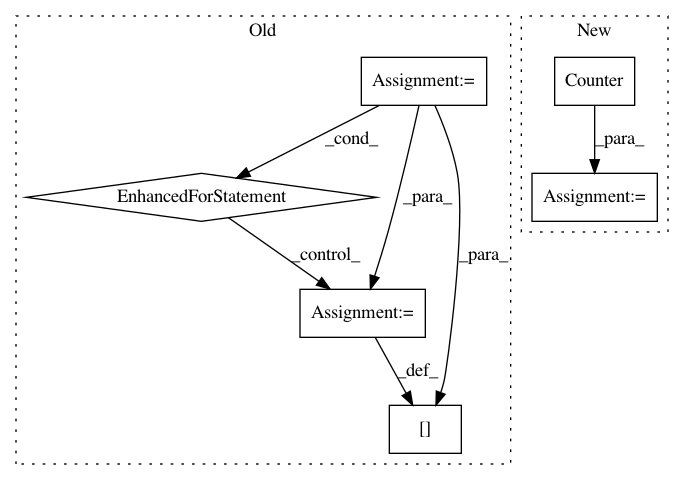

9000ad931722064fb2efe38649389a5154538ce4,tensorforce/core/networks/auto.py,AutoNetwork,internals_spec,#Any#Any#Any#Any#,125
Before Change
if network is None:
if internal_rnn:
for name, internal_spec in InternalLstm.internals_spec(size=final_size).items():
internals_spec["internal_lstm-" + name] = internal_spec
return internals_spec
def tf_apply(self, x, internals, return_internals=False):
// State-specific layers
After Change
elif len(spec["shape"]) == 2 - embedding:
layer = "conv1d"
elif len(spec["shape"]) == 3 - embedding:
layer = "conv2d"
elif len(spec["shape"]) == 0:
layers.append(self.add_module(name=(name + "-flatten"), module="flatten"))
layer = "dense"
else:
raise TensorforceError.unexpected()
// Repeat layer according to depth (one less if embedded)
for n in range(self.depth - embedding):
layers.append(
self.add_module(
name=(name + "-" + layer + str(n)), module=layer, size=self.size
In pattern: SUPERPATTERN
Frequency: 3
Non-data size: 6
Instances
Project Name: reinforceio/tensorforce
Commit Name: 9000ad931722064fb2efe38649389a5154538ce4
Time: 2019-02-13
Author: alexkuhnle@t-online.de
File Name: tensorforce/core/networks/auto.py
Class Name: AutoNetwork
Method Name: internals_spec
Project Name: OpenNMT/OpenNMT-py
Commit Name: d556116728d4f505eb14be081f29e32212145725
Time: 2017-09-01
Author: bpeters@coli.uni-saarland.de
File Name: onmt/IO.py
Class Name:
Method Name: merge_vocabs
Project Name: dirty-cat/dirty_cat
Commit Name: a1a430fa42fa58cb3ba9d93f44749319928b78c8
Time: 2018-03-14
Author: patricio.cerda@inria.fr
File Name: dirty_cat/string_distances.py
Class Name:
Method Name: ngram_similarity